Chapter 16. Mapping
The Mapping feature facilitates representation of Early Warning, Alert and Response System (EWARS) data on a map. You can download EWARS maps easily and use them for data presentations, reports or sharing via links.
 Note: the Mapping feature and the map widget are two different mapping facilities provided in EWARS. The Mapping feature allows you to represent the data for different locations in the form of multiple layers on a map. This cannot be incorporated into dashboards, bulletins, notebooks or websites. The map widget, on the other hand, cannot represent data in the form of multiple layers but can be used in dashboards, bulletins, notebooks and websites. Note: the Mapping feature and the map widget are two different mapping facilities provided in EWARS. The Mapping feature allows you to represent the data for different locations in the form of multiple layers on a map. This cannot be incorporated into dashboards, bulletins, notebooks or websites. The map widget, on the other hand, cannot represent data in the form of multiple layers but can be used in dashboards, bulletins, notebooks and websites. |
For more information on the map widget, refer to Chapter 17. Widgets and their configuration, topic 17.16 Map widget.
Fig. 16.1 shows the different types of maps that can be produced with the Mapping feature in EWARS.
Fig. 16.1. Types of maps EWARS can produce
|
||
|
16.1 Creating a new map
 EWARS EWARS |
provides you with a base map on which you can overlay data from the system. You need to have country GeoJson data in the system before configuring the map. |
Follow the instructions below to create a new map.
- Select Menu > Mapping > Create New, and the screen below appears:
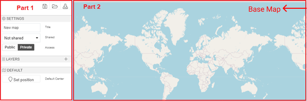
Part 1 of the screenshot above shows the configuration options for maps. As you configure the fields in this section, the map is displayed on the base map shown as Part 2.
Configuration of a map (in Part 1) has three steps:
Settings – configuring general settings
Layers – adding layers to the map
Default – setting the default map position.
Step 1. Configure general settings.
Title: enter the map title (e.g. “Geographical distribution of Cholera alerts in 2021”).
Shared: by default, no map is shared with others; it is not visible to other users as well. Once the option is set to Shared, it is shared with other users and visible under Shared maps. Select your preferred option.
Access: by default, the access type is Private; you cannot access the map outside the system. Once the option is set as Public, if required, you can access the map externally with the help of a link. Select your preferred access type.
Step 2. Add layers to the map.
Mapping allows you to add multiple layers to a single map. Each map layer displays a specific geographical dataset. Follow the steps below to add a layer.
- Click on Layers > click on the add icon to add a new layer, and the Layers screen below appears:
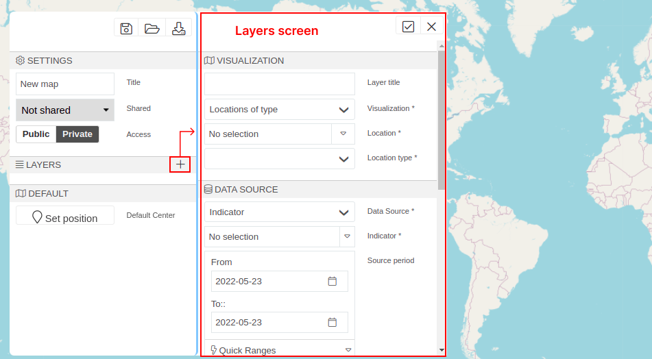
The layers screen consists of five sections: visualization, data source, thresholds, style and labels.
1. Visualization
Layer title: enter a Layer title, which is displayed as the legend name on the map (e.g. “No. of cholera alerts in Country X”).
Visualization: set the Visualization according to your needs from the options below:
Single Location: this lets you select a single location from the location drop-down menu, which is rendered on the map.
Locations of Group: this lets you select a location group, and all the locations of the selected group are rendered on the map.
Locations of type: this lets you select a Location and a Location type (for example, if the Location is set as Province X and the Location type is set as Health Facility, all health facilities in Province X are rendered on the map).
For more information regarding configuration of locations and location types, refer to Chapter 3. Locations.
Collected Lat/Long: this lets you select a form with a field for global positioning system (GPS) coordinates. Select the Form and then the Lat/long field > select the From and To dates. The data from the reported fields will make the map layer, in this case as a point locations.
Alerts Map: this lets you select an Alarm, select a Dimension/alarm status and select From and To dates. Alerts triggered by the selected alarm between the dates are rendered on the map.
| Note: you don’t need to configure the data source and thresholds sections for the visualization types collected lat/long and alerts map. |
2. Data source
- Data source: set the Data source according to your needs from the options below:
Indicator: set Data Source as Indicator > select the indicator > select From and To dates in the calendar.
Formula: input the formula you want to use (e.g. Diarrhoea = total AWD + total cholera). Once you have stated the formula name, select each variable (e.g. total AWD or total cholera) and select the appropriate indicator under each variable > click on Add Variable > click on the edit icon > enter a Variable Name () > select the Indicator > click on Add Variable again > click on the edit icon > enter another Variable Name > select the correct indicator > select the From and To dates in the calendar.
3. Threshold
Click on the add icon to add a threshold value > enter a range (e.g. “0” to “50”).
Select a colour for the threshold from the drop-down menu.
Repeat the steps above to add more thresholds
Show Legends: by default, legends are hidden. Once you select Yes, legend information is visible.
Legend Position: by default, the legend information is displayed at the bottom right-hand position of the map. Select your preferred legend position from the available options.
The screenshot below shows how different thresholds are displayed in the legend:
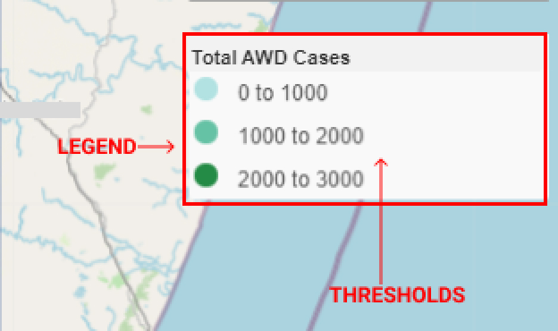
4. Style
- Choose the Stroke Colour to set the border colour (the default is black) > enter the Stroke Width to set the border size (the default is 5) > choose the Fill colour to set the background colour (the default is white) > enter a Fill opacity of between 0.0 and 1.0 (the default is 1) > select the Marker type (the default is a circle) > enter the Marker size (the default is 10).
5. Labels
Labels display the count and name of the location. Set them according to your needs from the options below:
Select the Label type from the drop-down menu (the default is Numbered) > choose the Label colour (the default is black) > enter the label size (the default is 10).
The screenshot below shows how the point locations appear with numbered labels:
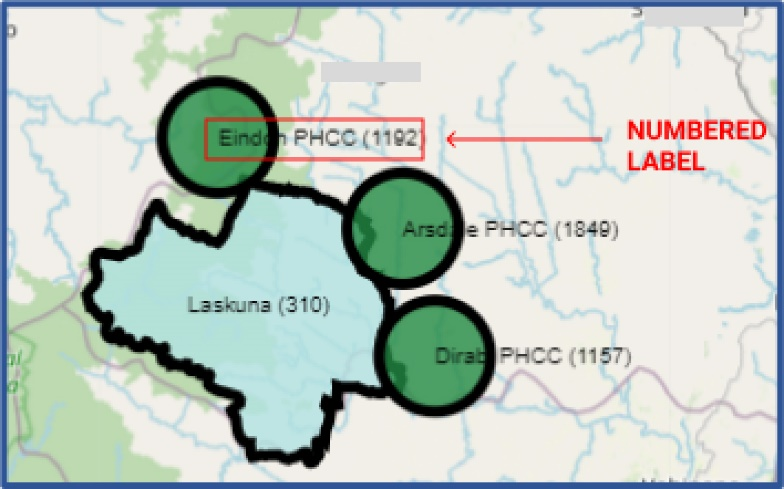
- Click on the apply icon to apply the changes you have made. The layer is saved with the name given in the layer title.
You can modify the layers after saving. All added layers are displayed under Layers, in the settings.
To edit a layer, click on the edit icon > apply the changes, and the layer is edited.
To delete a layer, click on the delete
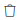
icon > apply the changes, and the layer is deleted.- Repeat the actions above within Step 2 to add more layers.
Step 3. Set the default map position.
Click on the map position > zoom in and out to identify the position of your context.
Click on Set Position, and the map position is set.
Click on the save icon to save the map, and the map is rendered.
16.2 Mapping data for a particular location
For demonstration purposes, this guide uses the following example.
Example 1. Map total measles cases for Nambutu for 2018.
Step 1. Configure general settings.
- Select Menu > Analysis > Mapping > Create New > enter a Title (e.g. “Measles Total”).
Step 2. Add a Layer for total measles cases.
Select Layers > click on the add icon.
Under Visualization, enter “Measles Total” as the Layer title > set Visualization as Single location > select the Location Nambutu.
Under Data source, set Data source as Indicator > select the Indicator (e.g. Measles Total) > set From as 2018-01-01 in the calendar > set To as 2018-12-31 in the calendar.
Under Thresholds, click on the add icon > enter “0” to “10000”, choose
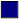
> click on the add icon again > enter “10001” to “20000”, choose > click on the add icon again > enter “20001” to “30000”, choose .Under Style, set Stroke Colour as > set Stroke Width as 2 > set Fill colour as > set Fill opacity as 0.9.
Under Labels, set Label type as Numbered > set Label colour as > click on the apply icon.
Step 3. Set the default map position.
Select Default > drag the map to your desired location > click on Set position.
Click on the save icon, and the map below is shown:
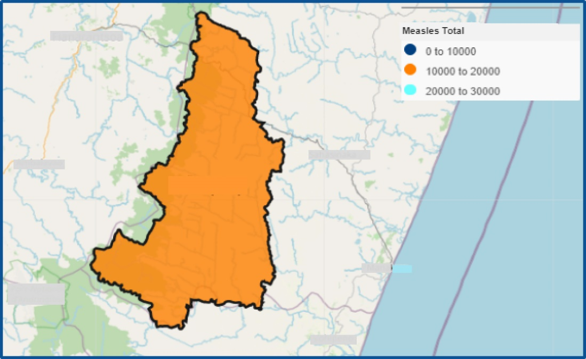
16.3 Mapping data for a particular type of location
For demonstration purposes, this guide uses the following two examples.
Example 1. Map total measles data by province for Nambutu for 2020.
Step 1. Configure general settings.
- Select Menu > Analysis > Mapping > Create New > enter a Title (e.g. “Measles Total”).
Step 2. Add a layer for measles case data
Select Layers > click on the add icon.
Under Visualization, enter “Measles Total” as the Layer title > set Visualization as Locations of type > select the Location Nambutu > select Provinces as the Location type.
Under Data source, set Data source as Indicator> select the Indicator (e.g. Measles Total) > set From as 2020-01-01 in the calendar > set To as 2020-12-31 in the calendar.
Under Thresholds, click on the add icon > enter “0” to “1000”, choose > click on the add icon again > enter “1001” to “2000”, choose , click on the add icon again > enter “2001” to “3000”, choose > click on the add icon again > enter “3001” to “4000”, choose > click on the add icon again > enter “4001” to “5000”, choose .
Under Style, set Stroke colour as > set Stroke width as 2 > set Fill colour as > set Fill opacity as 0.8.
Under Labels, set Label type as Numbered > set Label colour as > click on the apply icon.
Step 3. Set the default map position.
Select Default > drag the map to your desired location > click on Set Position.
Click on the save icon, and the map below is shown:
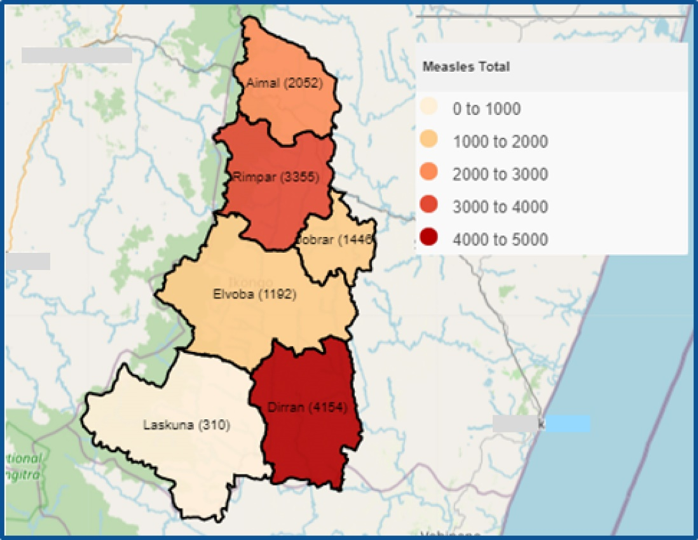
Example 2. Map total acute watery diarrhoea (AWD) data by health facility for Elvoba Province in Nambutu for 2018.
Step 1. Configure general settings.
- Select Menu > Analysis > Mapping > Create New > enter a Title (e.g. “AWD Cases – Health facility Elvoba Province”).
Step 2. Add a layer for AWD cases.
Select Layers > click on the add icon.
Under Visualization, enter “AWD cases – Health facility Elvoba Province” as the Layer title > set Visualization as Locations of type > select the Location Elvoba Province > select Health Facility as the Location Type.
Under Data source, set Data source as Indicator> select the Indicator AWD Cases Total > set From as 2018-01-01 in the calendar > set To as 2018-12-31 in the calendar.
Under Style, set Stroke colour as > set Stroke width as 2 > set Fill colour as > set Fill opacity as 0.8 > set Marker type as Circle > set Marker size as 40.
Under Labels, set Label type as Numbered > set Label colour as > click on the apply icon.
Step 3. Set the default map position.
Go to Default > drag the map to your desired location > click on Set Position.
Click on the save icon, and the map below is shown:
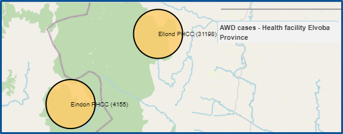
16.4 Mapping data for a particular group of locations
For demonstration purpose, this guide uses the following example.
Example 1. Map the total AWD data of locations served by nongovernmental organization (NGO) X in Nambutu for 2020.
Step 1. Configure general settings.
- Select Menu > Analysis > Mapping > Create New > enter a Title (e.g. “AWD – NGO X”).
Step 2. Add a layer for AWD cases.
Select Layers > click on the add icon.
Under Visualization, enter “AWD – EWARS Group” as the Layer title > set Visualization as Locations of Group > select NGO X as the Group.
Under Data source, set Data source as Indicator > select the Indicator AWD Total > set From as 2020-01-01 in the calendar > set To as 2020-12-31 in the calendar.
Under Thresholds, click on the add icon > enter “0” to “1000”, choose > enter “1000 to 3000”, choose .
Under Style, set Stroke colour as > set Stroke width as 2 > set Fill colour as > set Fill opacity as 0.8 > set Marker type as Circle > set Marker size as 40.
Under Labels, set Label type as Numbered > set Label colour as > click on the apply icon.
Step 3. Set the default map position.
Go to Default > drag the map to your desired location > click on Set Position.
Click on the save icon, and the map below is shown:
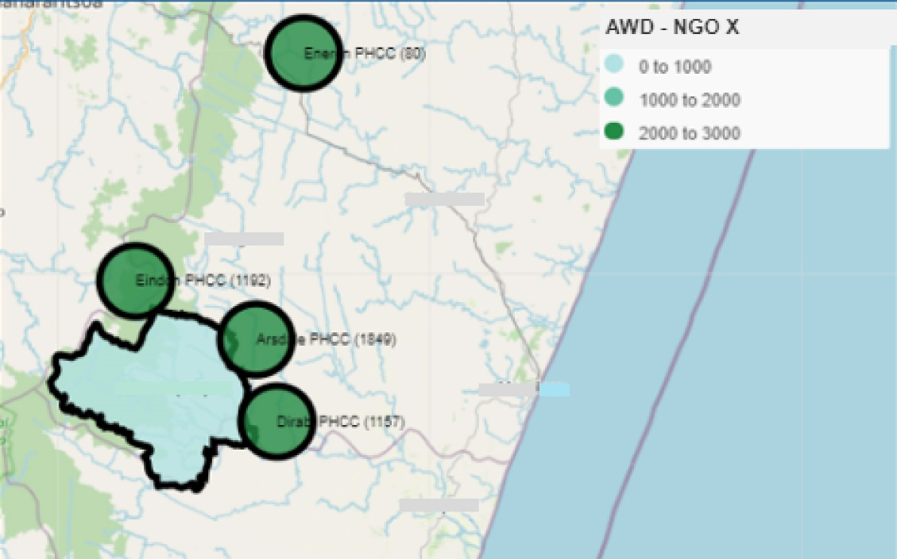
16.5 Mapping coordinate (latitude and longitude) data
For demonstration purposes, this guide uses the following example.
Example 1. Map the data from the weekly EWARS reporting form based on the Collected Lat/Long field for Nambutu from January 2021 to June 2021.
Step 1. Configure general settings.
- Select Menu > Analysis > Mapping > Create New > enter a Title (e.g. “Reports based on Lat/Long”).
Step 2. Add a layer for report data.
Select Layers > click on the add icon.
Under Visualization, enter “EWARS Group” as the Layer title > set Visualization as Collected Lat/Long > select Weekly EWARS Reporting Form > select GPS coordinates as the Field > set From as 2021-01-01 in the calendar > set To as 2021-06-30 in the calendar.
Under Style, set Stroke colour as > set Stroke width as 2 > set Fill colour as > set Fill opacity as 0.8 > set Marker size as 40.
Under Labels, set Label type as Numbered > set Label colour as > click on the apply icon.
Step 3. Set the default map position.
Go to Default > drag the map to your desired location > click on Set Position.
Click on the save icon, and the map below is shown:
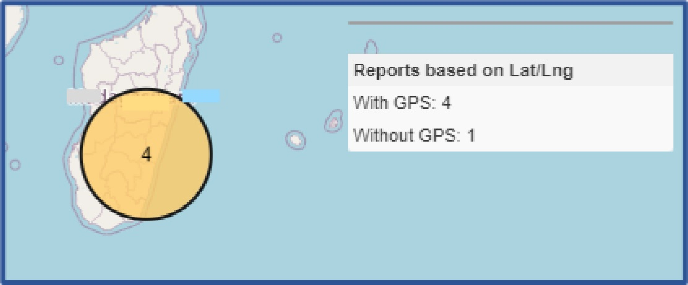
16.6 Showing alert data on a map
For demonstration purposes, this guide uses the following example.
Example 1. Show AWD alerts for Nambutu for 2020.
Step 1. Configure general settings.
- Select Menu > Analysis > Mapping > Create New > enter a Title (e.g. “AWD Alerts”).
Step 2. Add a layer for AWD alerts.
Select Layers > click on the add icon.
Under Visualization, enter “AWD Alerts” as the Layer title > set Visualization as Alerts Map > select the Location Nambutu > select AWD as the Alarm > set Alerts triggered as the Dimension > set From as 2020-01-01 in the calendar > set To as 2020-12-31 in the calendar.
Under Style, set Stroke colour as > set Stroke width as 3 > set Fill colour as > set Fill opacity as 0.8 > set Marker size as 15 > click on the apply icon.
Step 3. Set the default map position.
Go to Default > drag the map to your desired location > click on Set Position.
Click on the save icon, and the map below is shown:
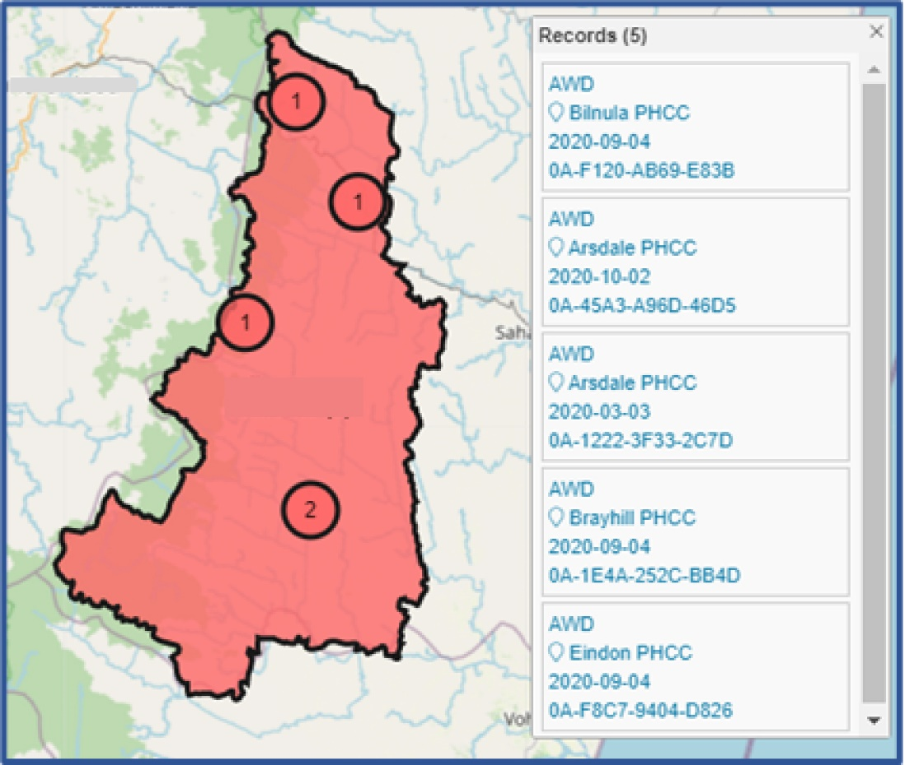
16.7 Mapping alerts for two different locations using a multilayer map
For demonstration purposes, this guide uses the following example.
Example 1. Map AWD alerts data for Aimal and Rimpar provinces for 2020.
Step 1. Configure general settings.
- Select Menu > Analysis > Mapping > Create New > enter a Title (e.g. “AWD Alerts”).
Step 2. Add a layer for AWD case data for Aimal Province for 2022.
Select Layers > click on the add icon.
Under Visualization, enter “AWD Alerts – Aimal” as the Layer title > set Visualization as Alerts Map > select the Location Aimal > select AWD as the Alarm > set Alerts triggered as the Dimension > set From as 2020-01-01 in the calendar > set To as 2020-12-31 in the calendar.
Under Style, set Stroke colour as > set Stroke width as 3 > set Fill colour as > set Fill opacity as 0.8 > set Marker size as 15 > click on the apply icon.
Step 3. Add a second layer for AWD case data for Rimpar province for 2022
Under Visualization, enter “AWD Alerts – Rimpar” as the Layer title > set Visualization as Alerts Map > select the Location Rimpar > select AWD as the Alarm > set Alerts triggered as the Dimension > set From as 2020-01-01 in the calendar > set To as 2020-12-31 in the calendar.
Under Style, set Stroke colour as > set Stroke width as 3 > set Fill colour as > set Fill opacity as 0.8 > set Marker size as 15 > click on the apply icon.
Step 4. Set the default position of the map.
Go to Default > drag the map to your desired location. Click on Set Position.
Click on the save icon, and the map below is shown:
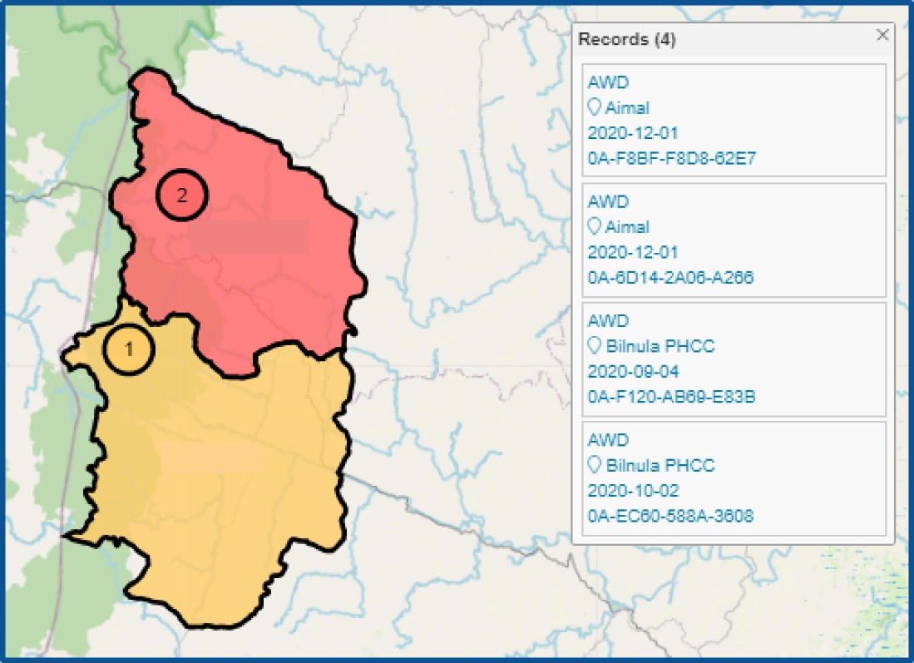
16.8 Viewing, editing and downloading My maps
My maps are maps created by you and not shared with other EWARS users.
- Select Menu > Analysis > Mapping > My Maps, and all maps you have created are listed, as shown below:
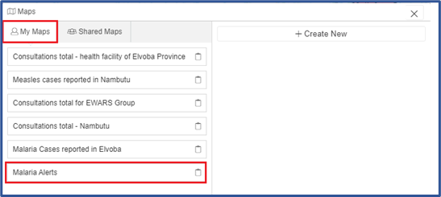
- Click on the name of the map (e.g. Map of Malaria Alerts), and the map below is shown:
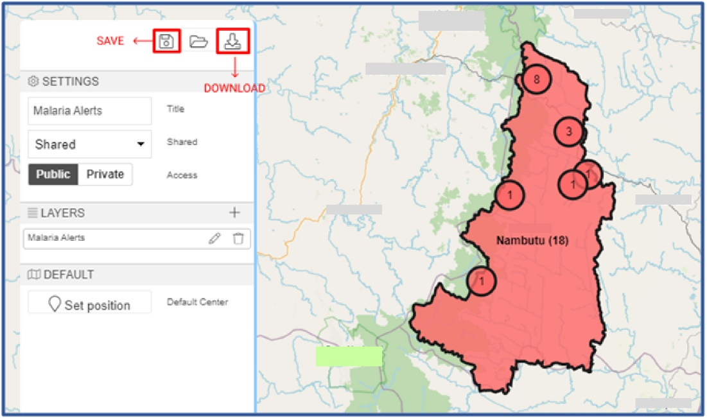
- If you want to edit saved maps > click on the map you want edit > make the required changes under the settings for the layers > click on the save
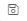
icon > click on the download icon, and the map is downloaded as a PDF file.
icon, and the map is downloaded as a PDF file.